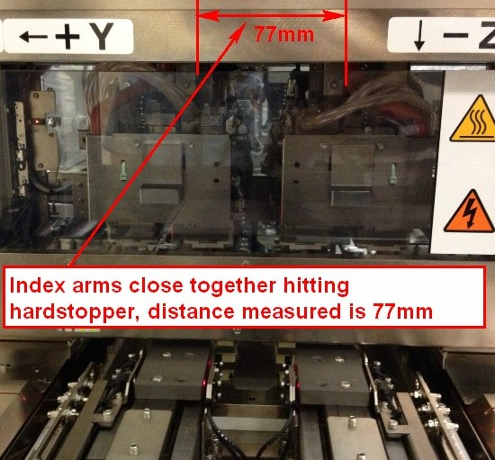
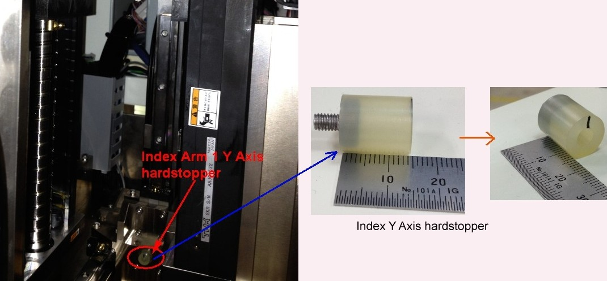
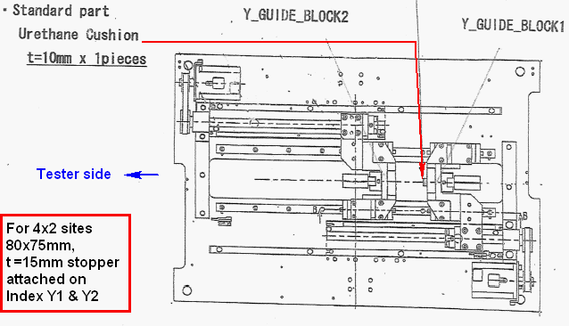

Service History
Subject: During AutoContact height, encountered torque error for Index Arms for 32 sites
Handler Model: NX1032XS (S/N: 182347)
Controller: RC520
Date: 30 Apr 2013
Symptom
This NX1032XS was previously in Xilinx running octal sites with 80mmx75mm pitch evaluation.
In our office, while trying to setup NX1032XS (S/N: 182347) for package CSP 5x5 32 sites, during AutoContact height, encountered torque error for Index Arms.
We used EPSON default setup file for 32 sites, SLK & Change kit for CSP 5x5, all were from EPSON.
HMI ver 1.50A.
During AutoContact Height, Index Arm 1 & 2 move towards each other and hit their Y Axes hard stop.
Manually Index Arm 1&2 together and measured(test arm edge to edge) their distance, it was 77mm.

Index Arm 1's hard stopper removed, also torque error during AutoContact Height.
The distance between Index Arm 1 & 2 when both Index Arms were pushed towards each other was 62mm.

Action
Finally, we removed both hard stoppers of Index Y1 & Y2 .
Able to complete AutoContact Height, able to dry run handler in 32 sites.
|
|
Distance between Index Arm 1 & 2 |
Remarks |
|
With Index Y Axis hard stoppers (t=15mm) |
77mm |
Torque error for Index Arm during AutoContact height |
|
With Index Y1 hard stoppers removed |
62mm |
Torque error for Index Arm during AutoContact height |
|
With index Y1 & Y2 both hard stoppers removed |
About 60mm |
Able to complete AutoContact height Able to run 32 sites |
According to EPSON, urethane cushion (stopper) of length t= 10mm of 1 pieces should be put on Index Y1 when setting up for normal 32 sites. There is no stopper for Index Y2 in this case.
This is a standard.
If for 4x2 site with test site pitch 80x75mm(eg for Xilinx), then Index Y1 and Y2 each need to put urethane cushion (stopper) of length t=15mm

Cause
Wrong urethane cushion (stopper) of length used on Index Arm and wrong quantity used for 32 sites.
Remarks
Email from Gomi-san on 8 May 2013:
Per our design section, it was thought that long stopper would be needed for wider socket pitch of Y direction,
75mm, which makes some part of change kit was larger than SLK in Y direction which cause possible knocking.
So, considering case of moving SLK by manual, longer stopper was prepared as temporary.
However, it will be troublesome to make appropriate stopper in length for such case,
we have been considering other ways like restriction of its movement by software for NX1032XS as volume production, instead of stopper.